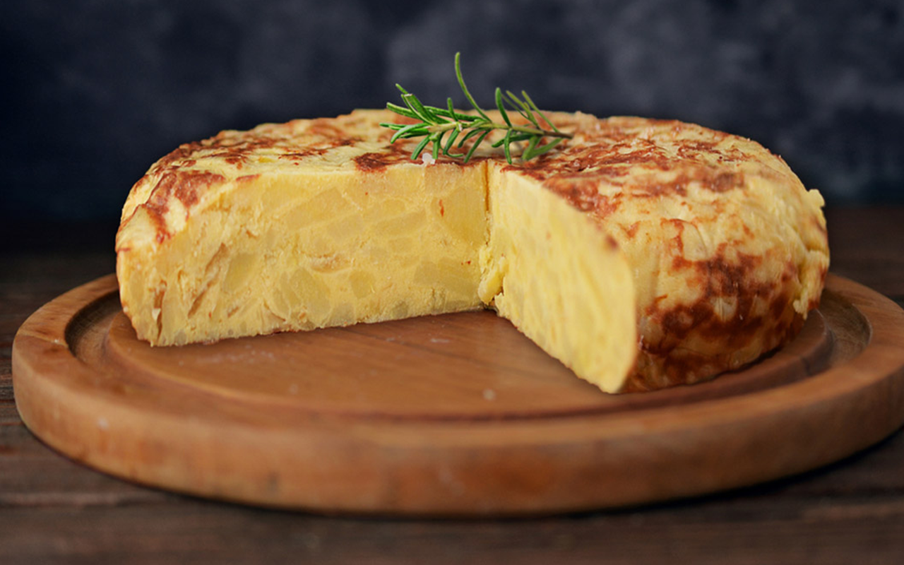
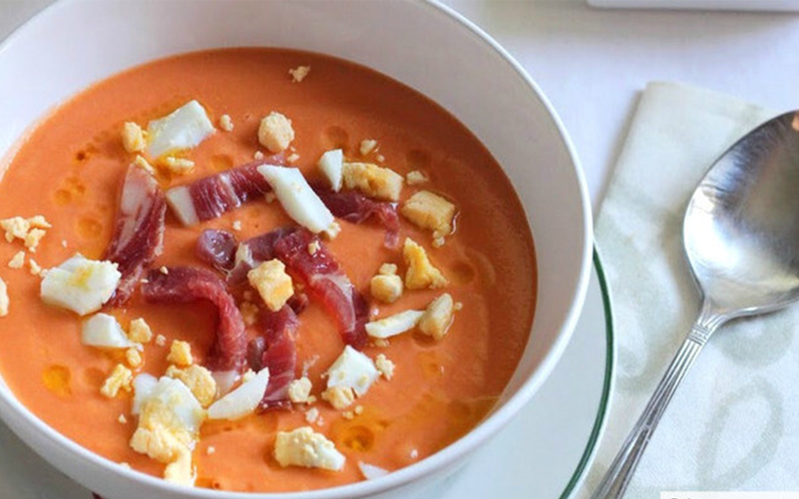
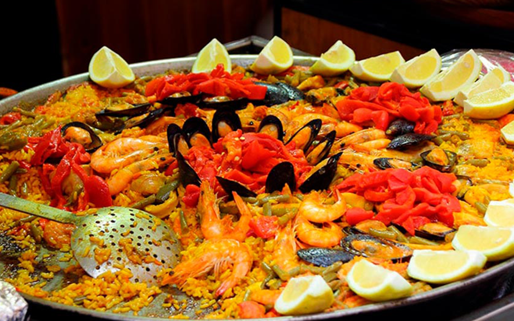

Gastronomía de España
RECETA DEL MES ESPAÑOLA
Tortilla de patatas

Ingredientes de la tortilla de patatas
Para 4 personas
Patatas 700g
Cebolla 300g
Huevos 6
Sal
Aceite de oliva
Como hacer la tortilla de patatas
Comenzamos con la tarea más larga, la de caramelizar la cebolla que nos llevará unos 30 minutos. Para ello, pelamos la cebolla y la cortamos en juliana. Después la ponemos en una sartén a fuego muy lento y dejamos
que se haga muy despacio, removiendo de vez en cuando. No nos interesa que se dore la cebolla sino que se vaya pochando muy despacio. Aquí podéis ver con detalle todos los trucos para caramelizar la cebolla en sus propios azúcares
naturales.
Mientras la cebolla se hace, pelamos las patatas y las cortamos en rodajas finas, procurando que todas ellas sean de tamaño uniforme. Las dejamos en agua durante 15 minutos y ponemos una sartén con aceite de oliva abundante en el fuego.
Sin dar tiempo a que el aceite se caliente, añadimos las patatas y dejamos que se vayan friendo muy despacio, partiendo de un aceite casi en frío. Así conseguimos que las patatas se confiten en lugar de dorarse.
De todas formas, cuando lleven unos diez minutos y hayamos removido de vez en cuando, podemos subir el fuego para conseguir que algunas de las patatas queden más tostaditas, originando así contrastes en el plato final.
Sacamos las patatas y las escurrimos bien del aceite y las ponemos en un bol grande. Escurrimos la cebolla cuando esté en su punto, y la ponemos sobre las patatas. Batimos los huevos y los añadimos al bol,
removiendo con un tenedor para que se mezclen bien los tres ingredientes.
De todas formas, cuando lleven unos diez minutos y hayamos removido de vez en cuando, podemos subir el fuego para conseguir que algunas de las patatas queden más tostaditas, originando así contrastes en el plato final.
Sacamos las patatas y las escurrimos bien del aceite y las ponemos en un bol grande. Escurrimos la cebolla cuando esté en su punto, y la ponemos sobre las patatas. Batimos los huevos y los añadimos al bol,
removiendo con un tenedor para que se mezclen bien los tres ingredientes.
Cuajamos la tortilla en una sartén con una cucharada de aceite durante unos tres o cuatro minutos y le damos la vuelta. Para ayudar a los que no sean muy duchos en esa operación, existen en el mercado sartenes dobles
que permiten dar la vuelta a la tortilla sin riesgo de que se nos derrame.
Audio España
Algunos platos típicos de Espana
Salmorejo

Especie de gazpacho hecho con pan, huevo, pimiento, tomate, ajo, sal y agua, todo desmenuzado y batido hasta obtener un puré fino.
Paella

Plato cuyo ingrediente principal es el arroz que se cocina con otros ingredientes como pescado, marisco, ave, carne, verduras, legumbres, etc.; es un plato típico de todas las regiones españolas, sobre todo de Valencia, variando en cada una el tipo y cantidad de ingredientes.